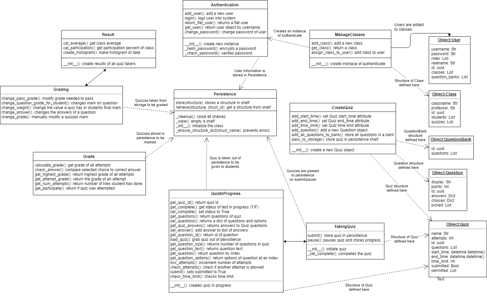

This project is an extensive quiz system for use by instructors and students alike to create and take quizzes, with accessibility to calculate grades both automatically and manually, as well as edit quizzes on the fly for easy accountability for any issue. Every module in this system should prove to be properly decoupled and accessible for any developer.
The module that is used as the base for this system is the Login, Authenticate, and Persistence module. This module deals with accessing the quiz system in the first place, and how each account would interact with the system. For instance, there should be a clear difference in what an instructor account can do in comparison to a student account, and the Login, Authenticate, and Persistence module is responsible for defining these differences and making sure the website knows which account the users are currently logged into. The Persistence part of this module is also incredibly important, where it is used to allow the quiz system to reach across multiple computers through the Python module ‘Shelve’, which can store and retrieve objects and values used in each one of our other modules.
The next module is the Create Quiz module, which is the module responsible for defining the structure of quizzes that the remaining modules will modify. The Create Quiz module’s main functions are in giving the user multiple options when creating a quiz, including choosing a start and end time, making an attempt and time limit, and choosing which type of quiz you would like to create. Alongside this, this module is responsible for accepting questions the user would like to create as well as what answers are correct for that question. All of these structures are used in every other module, mostly as a way to make sure the quiz is taken correctly and which objects will be reviewed and marked.
The Take Quiz module is the module most important for student accounts to be able to interact with, as it is as it says on the tin, a module to allow students to access and take quizzes. It relies heavily on the Create Quiz module to be passed Quiz objects for its various functions to be applied. This module is also the module which may most rely on a working persistence system, as every question a student answers must be grabbed through persistence, and it’s answer submitted back into the system every time. If a student changes their answer, it must take the question from the shelf, erase it’s answer, and replace it with the new answer, then push it back on the shelf.
The first of the grading modules is the Automatic Grading module, which deals with the mathematical aspect of grading, based on clear-cut answers to questions. It checks each submitted answer and deems if it’s correct or not, and adds points accordingly to the student’s overall grade on the quiz. All of these variables, your points on each question, your overall percentage, and even your attempt total, are all saved to the shelve to be used later. This means that although the automatic grading module technically finishes your quiz and presents you with a result, it can still be changed should an error arises.
This brings us into our final module, the Manual Grading module. The Manual Grading module is used to edit quizzes, questions and marks when the result needed defies what the automatic grading module produces naturally. Say if you need to give a student marks for an answer the quiz would normally mark as incorrect. Whether this is the cause of incorrect programming, or perhaps the student was able to convince you his answer should be considered a proper response, the manual grading module allows a user with instructor privileges to bypass the mark previously given to the student, and the instructor may explore a variety of options to correct this error, including for instance changing a question on the quiz due to improper formatting, bad phrasing, or any other related issue. This module relies heavily on the Automatic Grading module to grab quiz results that have already been gathered and change those accordingly.

,.,
MMMM_ ,..,
"_ "__"MMMMM ,...,,
,..., __." --" ,., _-"MMMMMMM
MMMMMM"___ "_._ MMM"_."" _ """"""
""""" "" , \_. "_. ."
,., _"__ \__./ ."
MMMMM_" "_ ./
'''' ( )
._______________.-'____"---._.
\ /
\________________________/
(_) (_)